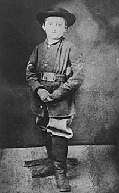
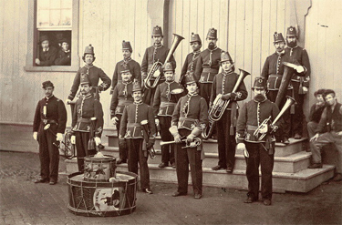
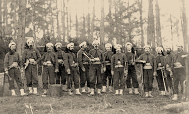
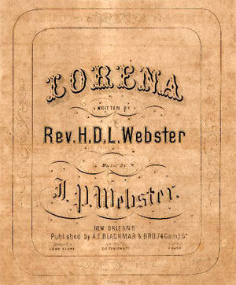

|
"I don't believe we can have an army without music" Robert E. Lee's famous
remark accurately depicted the truth that music played an important role in the
Civil War. Both armies drew upon a common musical heritage and common musical
practices. Field music provided communication and brass bands created some sense
of home while the songs of the camp filled the empty hours and warmed hearts
made cold by war. From early in the morning until late at night, music filled
the air in both Northern and Southern camps.
Field Music
All army units had field music: drummers and fifers for the infantry and
drummers and buglers for cavalry and artillery. Under the guidance of a drum
major, the field musicians learned to play and perform dozens of calls, tunes
|

Drummer boy Johnny Clem, who ultimately remained
in the army for 55 years, retiring as a general.
|
that regulated a soldier's day and allowed officers to communicate on the field.
Drum majors carried heavy responsibility since drummers were the youngest
members of the armies. Johnny Clem of Ohio enlisted when he was only nine years
old, and Johnny Walker from Wisconsin was only twelve at the beginning of his
service. These youngsters became heroes and composers sentimentalized their
exploits in songs like, "For the Dear Old Flag I Die," "The Drummer Boy of
Shiloh," and "The Little Major" with its pathetic refrain, "can you friend
refuse me water, can you when I die so soon."
The young musicians controlled the movements of the army. Beginning with
"The Long Roll" and ending with "Taps after Tattoo," field music not only
signaled meals, visits to the doctor, church, and camp duties, but also sent men
charging into the enemy or racing away from it. "Taps," as modern listeners know
it, was created as a method of ending confusion during battle. One general told
his field musicians to play a melody based on his name, "Dan, Dan,
Dan--Butterfield, Butterfield," before sounding the required call for his men.
Played slowly and sweetly, the phrase became the melody most associated with
military funerals.
Brass Bands
Brass bands played a central part in community life throughout the 1850s.
|

The 10th Veterans' Reserve Corps band, photographed
in 1865.
|
Because of technological advances in the 1840s brass instruments could be played
using a relatively simple set of fingerings. This allowed people to learn to
play with minimal training. Books of music containing parts for small bands
became widely available and musical organizations sprang up in settlements of
all sizes. Local militia units hired town bands to perform during drill
weekends. They recruited the bandsmen to join them as regimental bands following
Lincoln's call for volunteers in 1861. It is estimated that the North paid as
many as ten thousand musicians as much as $15,00,000 during the course of the
War. To decrease the cost of supporting the musicians, regimental bands were
discharged in July 1862 and only the best units were retained as brigade bands.
Bands varied in size and quality. The Twenty-sixth North Carolina band,
reputed to be the favorite of Robert E. Lee, had less than 10 players. Post
bands, like the United States Marine Corps Band, could have as many as three
dozen players, but field bands averaged twelve to eighteen players. Some, like
the band of the First Brigade of Wisconsin Volunteer Infantry, contained
excellent musicians. Others, like that of the Sixth Wisconsin Infantry, knew
only one song and played that badly. One Northern band practicing near the cook
tent was chased away so their music would not "spoil the meat."
Popular Songs
Military band books contained a wide range of music. Musicians played
patriotic airs such as "Columbia, the Gem of the Ocean," "Red, White and Blue,"
"Battle Cry of Freedom," and "The Star Spangled Banner" at recruiting events and
for military parades. Hymns and dirges, including "Mother, I've Come Home to
Die," were used for church services and funerals. Waltzes, polkas, schottisches
and other dances helped pass the long hours of inspection and calmed men waiting
to go into battle. Most bands had a huge supply of quicksteps--marches employed
when moving the army from place to place along long, dusty roads. They also had
a good number of arrangements of opera songs--the musical theater of the day.
The most prized arrangements were those of pieces written during the Civil
War. Most Northern groups had one or more versions of "John Brown's Body" about
the famed abolitionist who led the raid on Harpers Ferry, Virginia before the
war. The song had a simple melody and the words were repetitive so soldiers
sang it endlessly. Following a long day of visiting army camps, the song stayed
in the mind of Julia Ward Howe. In the middle of the night she awoke and wrote a
|

The band of the 114th Pennsylvania.
|
new set of words for the tune and called it "The Battle Hymn of the Republic."
Very lucky bands played "Hell on the Rappahannock," a song complete with the
thunder of battle provided by drums. The piece was made famous by the 114th
Pennsylvania Zouaves.
Other popular compositions were by Henry C. Work and George F. Root. The two
men owned and operated publishing houses specializing in sheet music. Root's
company published both "John Brown's Body" and "The Battle Hymn of the
Republic," and Work composed equally popular tunes including "Marching Through
Georgia" which memorialized the movement of Sherman's army across the South near
the end of the war.
As the soldiers settled in for the night, officers frequently called for
their band to come out to perform a serenade, a concert of sentimental and
patriotic favorites. When a band was not present the soldiers did the honors
themselves, gathering around campfires to sing songs that reminded them of home.
When feeling particularly patriotic Southerners sang "The Bonny Blue Flag," a
song that listed the names of the secessionist states. Well aware of their
precarious supply system the Confederates marched along to the strains of
"Goober Peas," a jaunty tune honoring the lowly peanut. Northerners countered
with the rousing "Battle Cry of Freedom" and "We Are Coming Father Abram."
Musical Heritage
The music of the Civil War came from a shared heritage. Both sides claimed
songs like "America" and both shared the beautiful hymns of the day, such as
"Abide with Me," "Old Hundreth," and "Rock of Ages." The song most closely
associated with the Confederacy, "Dixie," was written by a New Yorker, Daniel
Decatur Emmett, and was one of Abraham Lincoln's favorite tunes. A minister from
Elkhorn, Wisconsin composed "Lorena," the favorite love song of southerners. Men
of one side borrowed the songs of the other side. Confederates sang, "Oh, I wish
I was in the land of cotton. Old times there are not forgotten," while
Northerners intoned, "A way down south in the land of traitors, rattlesnakes and
alligators." This shared heritage caused one of the most poignant moments of
the war. On one evening at the Battle of Stone's River, a Union band marched
down to the river's edge and struck up a patriotic air. As they completed the
tune, a Confederate band struck up a song of their own on the other side of the
river. Turn after turn the two bands played through their music books. Finally,
the Union band began the song "Home, Sweet Home." Softly the Confederates chimed
|

Sheet music for the popular tune "Lorena."
|
in. As the two bands finished, the voices of the armies encamped on either side
of the river took up the strain--"Be it ever so humble, there's no place like
home."
Southerners worked to create music that was uniquely theirs. A new national
anthem, "God Save the South," appeared in the songbooks of many Confederate
units, but never achieved the popularity of "Dixie." Writers composed new words
for old, familiar songs, like the French anthem "Le Marseillaise." The old Irish
tune "The Wearing of the Green" became "The Wearing of the Grey," and the German
Christmas carol, "O, Tannenbaum" served as the basis for "Maryland, My
Maryland."
"O, Tannenbaum" was not the only holiday song loved by soldiers and used by
musicians. "Jingle Bells" had been written shortly before the Civil War and was
sung in many winter camps. Since bands had to perform during funerals, they
needed a supply of dirges. By changing just a few notes, one band used an old
Latin hymn, "O Come, All Ye Faithful," to send the dead to their final resting
place. One well-loved Christmas song had its origins in the Civil War. In 1863
Henry Wadsworth Longfellow composed a poem that was set to music in 1872. "I
Heard the Bells on Christmas Day" reflected Longfellow's agony following the
death of his son at Gettysburg in 1863. He began, "I heard the bells on
Christmas day Their old familiar carols play." Rather than a song of joy, the
tune first became despairing but ultimately turned hopeful: "'There is no peace
on earth,' I said, 'For hate is strong and mocks the song of peace on earth good
will to men. Then pealed the bells more loud and deep" 'God is not dead nor does
he sleep; The wrong shall fail, the right prevail With peace on earth good will
to men.'" The men of both sides embraced the ideas of that song.
Ethnic Influences
The music of the Civil War clearly reflected the multi-ethnic nature of the
United States. Many popular songs were written in dialect of one sort or
another. While some used the speech patterns of slaves to add a touch or
authenticity or comedy to their music, others bore witness to the hopes for a
better future for African Americans found in songs like "Kingdom Coming." A few
songs, such as the "Marching Song of the First Arkansas" recorded the entry of
African Americans into the armed forces of the country and declared, "We have
done with hoeing cotton, we have done with hoeing corn." Dialect songs also
indicate the presence of other ethnic groups within the armies. "I Goes to Fight
Mitt Sigel" recorded the experiences of one German volunteer who fought "To Save
der Yankee Eagle." The tune was a popular, humorous ditty but band books
indicate that ethnicity was treated with equal respect. Songs like "Russian
Hymn" were a regular part of the Civil War repertoire.
The sentimental songs of home and of shared suffering brought the two sides
together again after the War. "Tenting Tonight on the Old Campground," with the
haunting refrain "many are the hearts looking for the right, to see the dawn of
peace," became a kind of generational anthem. Songs like "Tenting" which
memorialized the Civil War efforts of both the North and South had companion
pieces particular to their region like "I'm a Good Ole Rebel" proclaiming the
signer's stand on post-War politics with the line: "I won't be reconstructed and
I don't give a damn!"
Source: Joan Waugh, ed., Facts on File Encyclopedia of American
History: Civil War and Reconstruction, 1856 to 1869 (New York: Facts on
File, 2003), 323-24.
|